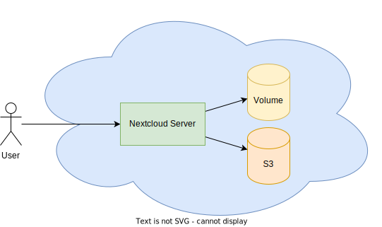
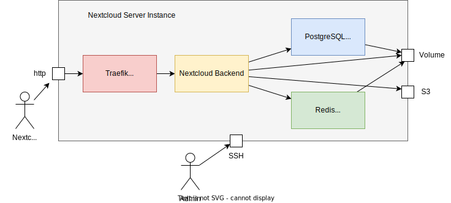

Setting up Nextcloud in the Hetzner Cloud
This setup will have the following features
- Automated with Terraform and Ansible
- Your own Collabora Office Server to work on office documents simultanously.
- Persistence on chead S3 Storage
- Easy to recover in case of a disaster
- Total cost of around 8€/month for 2TB
Where to find the source
The source is on github. Use it as you wish.
Architecture view
)

What the scripts do..
Terraform and Ansible will work together to set everything up.
Terraform will
Ansible will
Prerequisites for you to understand this stuff
- basic understanding of linux
- basic understanding of network administration
- basic understanding of docker
More than just basic understanding is of course better
Prerequisites that you need to have to reproduce this stuff
- a hetzner cloud account
- a domain name in the hetzner cloud account
- terraform installed on your computer
- ansible installed on your computer
https://joshtronic.com/2021/03/07/delete-all-files-in-an-s3-bucket/
https://hub.docker.com/_/nextcloud/
https://community.hetzner.com/tutorials/nextcloud-hetzner-object-storage
https://docs.hetzner.com/storage/object-storage/getting-started/using-s3-api-tools/
https://prasanthmj.github.io/terraform/terraform-hetzner-cloud-setup-example/
https://manpages.ubuntu.com/manpages/xenial/man1/s3cmd.1.html
s3cmd -c s3cfg del s3://kothe2 --recursive --force
s3cmd -c s3cfg sync s3://kothe2 backup